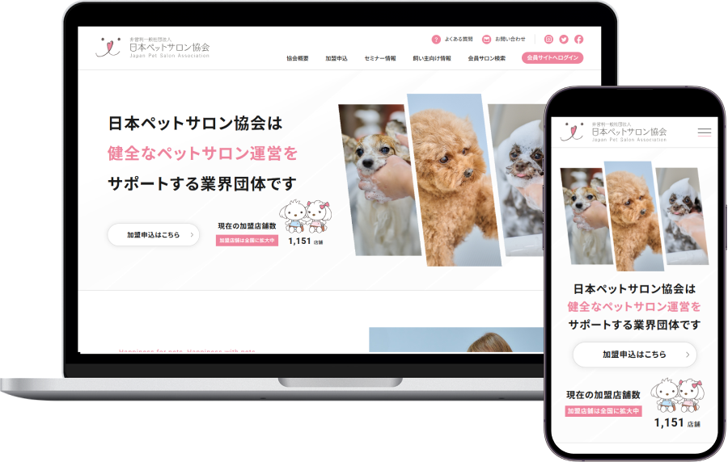
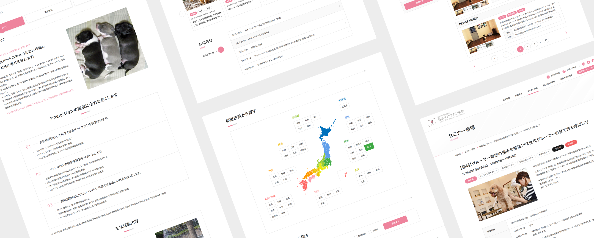
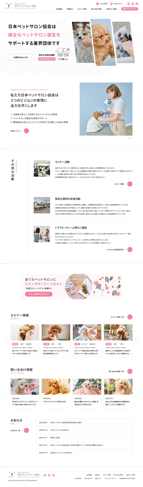
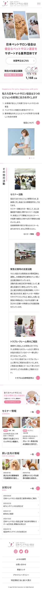

WORKS
つくったもの
日本ペットサロン協会
WEB
- 担当業務
-
ディレクター
デザイナー
フロントエンドエンジニア
- 制作期間
-
2025年7月 ～ 2026年3月
ディレクション : 1週間
ワイヤーフレーム : 1週間
デザイン : 1ヶ月
コーディング：3.5ヶ月 - 予算規模
- 1,000万円
- 使用ツール
- Figma / Photoshop / VSCode
- 使用言語
- HTML / CSS / JavaScript / jQuery

日本ペットサロン協会公式サイトのリニューアルプロジェクト
ペットサロン業界向け団体サイトのリニューアルにおいて、情報設計の見直しとUI/UX改善を主導。
複雑化していたサイト構造を整理し、ユーザーが目的の情報へスムーズに到達できる導線設計へ改善しました。
レスポンシブ対応を前提に設計・実装を行い、デバイスを問わない閲覧性と操作性を向上。
デザインの統一によりブランド信頼性の向上にも寄与しました。
また、ディレクション・ワイヤーフレーム作成・デザイン・コーディングまで一貫して担当し、大規模サイト（約100ページ・会員機能）の構築をリード。
申込フローや決済機能を含むUI設計により、ユーザーの離脱を防ぐ導線設計を実現しました。

ABOUT
概要
- クライアント
-
非営利一般社団法人 日本ペットサロン協会
- 課題
-
- サイト構造が複雑で、必要な情報にたどり着きにくい状態
- スマートフォン表示への最適化が不十分
- デザインやUIが旧式で、ユーザビリティが低下
- 更新性・拡張性を考慮したフロントエンド設計が必要
- 目的
-
- 情報構造を整理し、ユーザーが目的の情報へ迅速にアクセスできるサイトへ改善
- スマートフォン・タブレットを含むマルチデバイス対応の実現
- UI/UXを改善し、ユーザビリティの高いサイトへ刷新
- 保守性・拡張性を考慮したフロントエンド実装の構築
- 取り組み
-
- HTML / CSS / JavaScriptを用いたレスポンシブサイトのフロントエンド実装
- ワイヤーフレーム・デザインカンプを基にしたマークアップおよびUI実装
- 変更・追加・再利用がしやすいCSS構造にするコーディングを意識したCSS設計による保守性の高いコーディング
- PC・スマートフォン・タブレットでの表示検証およびクロスブラウザ対応
- ナビゲーションやUIパーツの改善によるユーザビリティ向上
- 成果・実績
-
- レスポンシブデザインを導入し、スマートフォン閲覧時のユーザビリティを向上
- 情報構造の整理により、主要コンテンツへの導線を改善
- 保守性を考慮したコーディングにより、運用・更新作業の効率化に貢献
- ターゲット
-
ペットサロン業界に関わる事業者（トリマー、サロン経営者）を中心に、業界への参入を検討している個人や関連企業、さらに協会の活動に関心を持つ一般ユーザーも含めた幅広い層をターゲットとしました。
- クライアントの要望
-
協会としての信頼性・権威性を高めるとともに、活動内容や理念を正確に伝えたいという要望がありました。また、情報が整理されておらず分かりづらい点を改善し、ユーザーが必要な情報へスムーズにアクセスできる導線設計への改善、スマートフォン対応による閲覧性向上も求められました。
CONCEPT
コンセプト
- デザインイメージ
-
清潔感と安心感を重視し、白を基調としたシンプルで見やすいデザインを採用しました。ペット関連サイトとしての親しみやすさを持たせつつ、協会サイトとしての信頼感を損なわないよう、余白やタイポグラフィを意識した落ち着いたトーンで設計しています。視認性と可読性を高めるため、情報の階層構造を明確にしました。
- コンセプト
-
「業界の信頼を支える情報発信基盤」をコンセプトに、ペットサロン業界の健全な発展を支える協会の役割が伝わるサイトを目指しました。情報整理と導線設計を最適化することで、ユーザーが迷わず目的にたどり着ける構成とし、協会の価値や活動意義を直感的に理解できるサイトを実現しています。
- フォント
-
和文：Noto Sans JP
欧文：Roboto - カラー
-
メインカラーにはロゴに使用されているピンクを使用し、ワンポイントカラーとして効果的に配置。白を基調にシンプルな配色とすることで、信頼性・誠実さを表現するとともに、柔らかく親しみやすい印象を演出しました。

